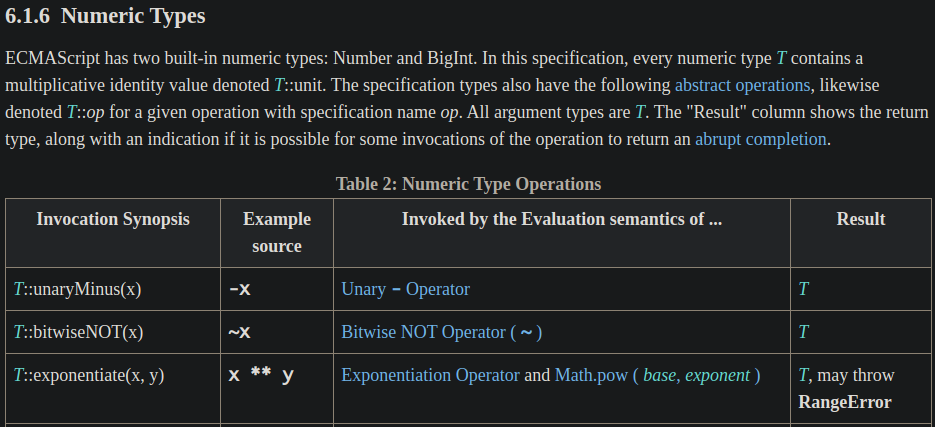
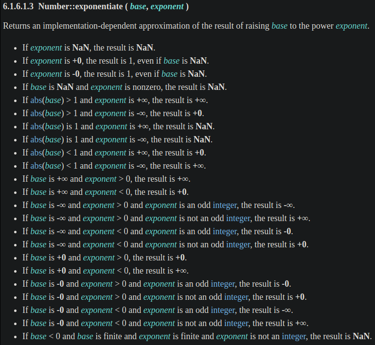
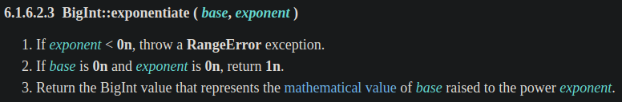
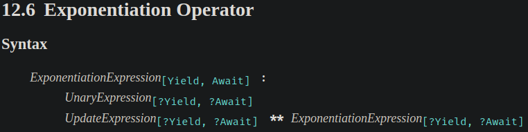
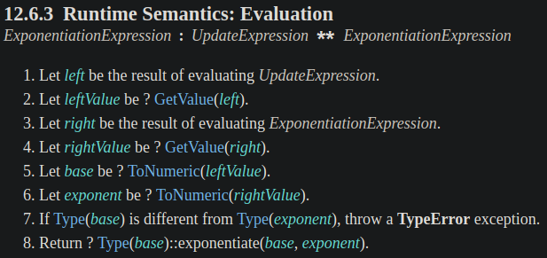
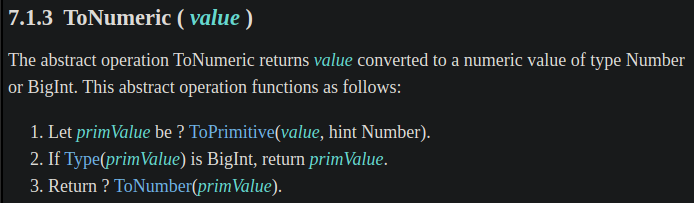
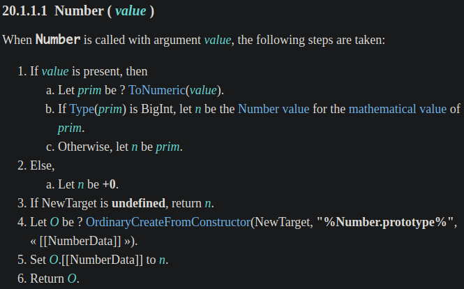
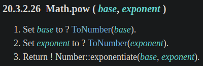

<!DOCTYPE html><html><head><meta charset="utf-8"><title>JavaScript 之旅 (3)：Exponentiation Operator (指數運算子) | Titangene Blog</title><meta http-equiv="X-UA-Compatible" content="IE=edge"><meta name="viewport" content="width=device-width,initial-scale=1,maximum-scale=1"><meta name="HandheldFriendly" content="True"><meta name="apple-mobile-web-app-capable" content="yes"><meta name="author" content="Titangene"><link rel="shortcut icon" href="/favicon.ico"><link rel="alternate" href="/atom.xml" title="Titangene Blog"><meta name="description" content="寫程式應該很常會用到指數運算，過去我們會用 Math.pow()，但在 ES2016 (ES7) 提供了 exponentiation operator (指數運算子) 的讓寫法更簡潔。那這兩個差在哪？讓我們從 ECMAScript spec 中一探究竟吧。"><meta property="og:type" content="article"><meta property="og:title" content="JavaScript 之旅 (3)：Exponentiation Operator (指數運算子)"><meta property="og:url" content="https://titangene.github.io/article/javascript-exponentiation-operator.html"><meta property="og:site_name" content="Titangene Blog"><meta property="og:description" content="寫程式應該很常會用到指數運算，過去我們會用 Math.pow()，但在 ES2016 (ES7) 提供了 exponentiation operator (指數運算子) 的讓寫法更簡潔。那這兩個差在哪？讓我們從 ECMAScript spec 中一探究竟吧。"><meta property="og:locale" content="zh_TW"><meta property="og:image" content="https://titangene.github.io/images/cover/javascript.jpg"><meta property="article:published_time" content="2020-09-18T05:36:56.000Z"><meta property="article:modified_time" content="2020-09-18T04:20:05.760Z"><meta property="article:author" content="Titangene"><meta property="article:tag" content="IT 鐵人賽"><meta property="article:tag" content="ECMAScript"><meta name="twitter:card" content="summary_large_image"><meta name="twitter:image" content="https://titangene.github.io/images/cover/javascript.jpg"><meta name="twitter:creator" content="@titangeneTW"><meta name="twitter:site" content="@titangene_blog"><meta property="fb:admins" content="100001106016019"><meta property="fb:app_id" content="2470546159839111"><meta property="og:image:width" content="1200"><meta property="og:image:height" content="630"><meta name="google-site-verification" content="AaJ39L7h-nWwJjXJMhAMtXSF6H6BUgGWXC80kYvLic8"><link href="https://fonts.googleapis.com/css2?family=Roboto&display=swap" rel="stylesheet"><link href="https://fonts.googleapis.com/css?family=Source+Code+Pro&display=swap" rel="stylesheet"><link rel="stylesheet" href="https://cdnjs.cloudflare.com/ajax/libs/font-awesome/5.13.0/css/all.min.css"><link rel="stylesheet" href="https://unpkg.com/gitalk/dist/gitalk.css"><link rel="stylesheet" href="/style.css"><script async src="https://www.googletagmanager.com/gtag/js?id=G-KX04S5LSX1"></script><script>!function(a){function n(){dataLayer.push(arguments)}a.dataLayer=a.dataLayer||[],n("js",new Date),n("config","G-KX04S5LSX1")}(window)</script><script>function setLoadingBarProgress(e){document.getElementById("loading-bar").style.width=e+"%"}</script><meta name="generator" content="Hexo 4.2.0"><link rel="alternate" href="/atom.xml" title="Titangene Blog" type="application/atom+xml"></head></html><body><div id="loading-bar-wrapper"><div id="loading-bar"></div></div><script>setLoadingBarProgress(20)</script><header class="l_header"><div class="wrapper"><div class="nav-main container container--flex"><a class="logo flat-box" href="/">Titangene Blog</a><div class="menu"><ul class="h-list"><li><a class="flat-box nav-home" href="/">Home</a></li><li><a class="flat-box nav-archives" href="/archives">Archives</a></li></ul><div class="underline"></div></div><div class="m_search"><form name="searchform" class="form u-search-form"><input type="text" class="input u-search-input" placeholder="Search"> <i class="fas fa-search"></i></form></div><ul class="switcher h-list"><li class="s-search"><a class="fas fa-search" href="javascript:void(0)"></a></li><li class="s-menu"><a class="fas fa-bars" href="javascript:void(0)"></a></li></ul></div><div class="nav-sub container container--flex"><a class="logo flat-box" href="/">Titangene Blog</a><ul class="switcher h-list"><li class="s-comment"><a class="far fa-comment-alt" href="javascript:void(0)"></a></li><li class="s-top"><a class="fas fa-arrow-up" href="javascript:void(0)"></a></li><li class="s-toc"><a class="fas fa-list-ol" href="javascript:void(0)"></a></li></ul></div></div></header><aside class="menu-phone"><nav><a href="/" class="nav-home nav">Home </a><a href="/archives" class="nav-archives nav">Archives</a></nav></aside><script>setLoadingBarProgress(40)</script><div class="l_body"><div class="container clearfix"><div class="l_main"><article id="post-javascript-exponentiation-operator" class="post white-box article-type-post" itemscope itemprop="blogPost"><section class="meta"><h2 class="title"><a href="/article/javascript-exponentiation-operator.html">JavaScript 之旅 (3)：Exponentiation Operator (指數運算子)</a></h2><span class="post-time"><span class="post-meta-item-icon"><i class="fa fa-calendar"></i> </span><span class="post-meta-item-text">發表於</span> <time title="建立時間：2020-09-18 13:36:56" itemprop="dateCreated datePublished" datetime="2020-09-18T13:36:56+08:00">2020-09-18</time></span> <span class="comments-count"><span class="post-meta-divider">|</span> <span class="post-meta-item-icon"><i class="fas fa-comment"></i> </span><a href="https://titangene.github.io/article/javascript-exponentiation-operator.html#comments" class="article-comment-count">留言</a></span><div class="post-category"><span class="post-meta-item-icon"><i class="fa fa-folder"></i> </span><span class="post-meta-item-text">分類於</span> <span itemprop="about" itemscope itemtype="http://schema.org/Thing"><a href="/categories/javascript/" itemprop="url" rel="index"><span itemprop="name">JavaScript</span></a></span></div></section><section class="toc-wrapper"><h3>目錄</h3><ol class="toc"><li class="toc-item toc-level-1"><a class="toc-link" href="#過去的-Math-pow"><span class="toc-text">過去的 Math.pow()</span></a></li><li class="toc-item toc-level-1"><a class="toc-link" href="#現代的-Exponentiation-Operator"><span class="toc-text">現代的 Exponentiation Operator</span></a><ol class="toc-child"><li class="toc-item toc-level-2"><a class="toc-link" href="#Associativity"><span class="toc-text">Associativity</span></a></li><li class="toc-item toc-level-2"><a class="toc-link" href="#Unary-Operation-的用法"><span class="toc-text">Unary Operation 的用法</span></a></li><li class="toc-item toc-level-2"><a class="toc-link" href="#Assignment-Operator-的用法"><span class="toc-text">Assignment Operator 的用法</span></a></li></ol></li><li class="toc-item toc-level-1"><a class="toc-link" href="#Exponentiation-Operator-vs-Math-pow"><span class="toc-text">Exponentiation Operator vs. Math.pow()</span></a></li><li class="toc-item toc-level-1"><a class="toc-link" href="#Sepc-定義"><span class="toc-text">Sepc 定義</span></a><ol class="toc-child"><li class="toc-item toc-level-2"><a class="toc-link" href="#Exponentiation-Operator-的-spec-定義"><span class="toc-text">Exponentiation Operator 的 spec 定義</span></a></li><li class="toc-item toc-level-2"><a class="toc-link" href="#Math-pow-的-spec-定義"><span class="toc-text">Math.pow() 的 spec 定義</span></a></li></ol></li><li class="toc-item toc-level-1"><a class="toc-link" href="#資料來源"><span class="toc-text">資料來源</span></a></li></ol></section><section class="article typo"><div class="article-entry" itemprop="articleBody"><p></p><p>寫程式應該很常會用到指數運算，過去我們會用 <code>Math.pow()</code>，但在 ES2016 (ES7) 提供了 exponentiation operator (指數運算子) 的讓寫法更簡潔。那這兩個差在哪？讓我們從 ECMAScript spec 中一探究竟吧。</p><a id="more"></a><blockquote><p>本文同步發表於 iT 邦幫忙：<a href="https://ithelp.ithome.com.tw/articles/10239196" target="_blank" rel="noopener">JavaScript 之旅 (3)：Exponentiation Operator (指數運算子)</a></p><p>「JavaScript 之旅」系列文章發文於：</p><ul><li><a href="https://ithelp.ithome.com.tw/users/20117586/ironman/3607" target="_blank" rel="noopener">iT 邦幫忙</a></li><li><a href="https://titangene.github.io/tags/it-%E9%90%B5%E4%BA%BA%E8%B3%BD/">Titangene Blog</a></li></ul></blockquote><h1 id="過去的-Math-pow"><a class="header-anchor" href="#過去的-Math-pow"></a>過去的 <code>Math.pow()</code></h1><p>過去要進行指數運算 (即計算 a 的 n 次方，表達式為 $a^n$，a 為底數，n 為指數，通常指數寫成上標，放在底數的右邊)，常用的是 <code>Math.pow()</code> (應該不會想手動寫多個 <code>*</code> 運算子 (multiplicative operators) 吧？)。例如：</p><p>平方：</p><figure class="highlight javascript"><table><tr><td class="gutter"><pre><span class="line">1</span><br><span class="line">2</span><br><span class="line">3</span><br><span class="line">4</span><br><span class="line">5</span><br><span class="line">6</span><br></pre></td><td class="code"><pre><code class="hljs javascript"><span class="hljs-keyword">let</span> x = <span class="hljs-number">2</span>;<br><br><span class="hljs-built_in">console</span>.log(<span class="hljs-built_in">Math</span>.pow(x, <span class="hljs-number">2</span>));  <span class="hljs-comment">// 4</span><br><br><span class="hljs-comment">// 等同於</span><br><span class="hljs-built_in">console</span>.log(x * x);           <span class="hljs-comment">// 4</span><br></code></pre></td></tr></table></figure><p>三次方：</p><figure class="highlight javascript"><table><tr><td class="gutter"><pre><span class="line">1</span><br><span class="line">2</span><br><span class="line">3</span><br><span class="line">4</span><br><span class="line">5</span><br><span class="line">6</span><br></pre></td><td class="code"><pre><code class="hljs javascript"><span class="hljs-keyword">let</span> x = <span class="hljs-number">2</span>;<br><br><span class="hljs-built_in">console</span>.log(<span class="hljs-built_in">Math</span>.pow(x, <span class="hljs-number">3</span>));  <span class="hljs-comment">// 8</span><br><br><span class="hljs-comment">// 等同於</span><br><span class="hljs-built_in">console</span>.log(x * x * x);       <span class="hljs-comment">// 8</span><br></code></pre></td></tr></table></figure><p>寫成函數可能像是這樣：</p><figure class="highlight javascript"><table><tr><td class="gutter"><pre><span class="line">1</span><br><span class="line">2</span><br><span class="line">3</span><br><span class="line">4</span><br><span class="line">5</span><br></pre></td><td class="code"><pre><code class="hljs javascript"><span class="hljs-keyword">let</span> square = <span class="hljs-function"><span class="hljs-params">x</span> =&gt;</span> <span class="hljs-built_in">Math</span>.pow(x, <span class="hljs-number">2</span>);<br><span class="hljs-keyword">let</span> cube = <span class="hljs-function"><span class="hljs-params">x</span> =&gt;</span> <span class="hljs-built_in">Math</span>.pow(x, <span class="hljs-number">3</span>);<br><br><span class="hljs-built_in">console</span>.log(square(<span class="hljs-number">6</span>));  <span class="hljs-comment">// 36</span><br><span class="hljs-built_in">console</span>.log(cube(<span class="hljs-number">3</span>));    <span class="hljs-comment">// 27</span><br></code></pre></td></tr></table></figure><h1 id="現代的-Exponentiation-Operator"><a class="header-anchor" href="#現代的-Exponentiation-Operator"></a>現代的 Exponentiation Operator</h1><p>在 ES2016 (ES7) 提供了 exponentiation operator (指數運算子)，用於指數運算。</p><p>exponentiation 運算子是一種 <a href="https://en.wikipedia.org/wiki/Infix_notation" target="_blank" rel="noopener">infix notation (中綴表示法)</a>，比用函數表示法還要更簡潔。</p><figure class="highlight javascript"><table><tr><td class="gutter"><pre><span class="line">1</span><br><span class="line">2</span><br></pre></td><td class="code"><pre><code class="hljs javascript"><span class="hljs-keyword">let</span> square = <span class="hljs-function"><span class="hljs-params">x</span> =&gt;</span> x ** <span class="hljs-number">2</span>;<br><span class="hljs-keyword">let</span> cube = <span class="hljs-function"><span class="hljs-params">x</span> =&gt;</span> x ** <span class="hljs-number">3</span>;<br></code></pre></td></tr></table></figure><div class="info"><p>註：有些程式語言會用 <code>^</code> 運算子來進行指數計算，但 JavaScript 的 <code>^</code> 運算子是 [bitwise XOR 運算子(<a href="https://developer.mozilla.org/en-US/docs/Web/JavaScript/Reference/Operators/Bitwise_XOR" target="_blank" rel="noopener">https://developer.mozilla.org/en-US/docs/Web/JavaScript/Reference/Operators/Bitwise_XOR</a>)來進行位元運算，例如：</p><figure class="highlight javascript"><table><tr><td class="gutter"><pre><span class="line">1</span><br><span class="line">2</span><br><span class="line">3</span><br><span class="line">4</span><br></pre></td><td class="code"><pre><code class="hljs javascript"><span class="hljs-keyword">let</span> a = <span class="hljs-number">5</span>;          <span class="hljs-comment">// 00000000000000000000000000000101</span><br><span class="hljs-keyword">let</span> b = <span class="hljs-number">3</span>;          <span class="hljs-comment">// 00000000000000000000000000000011</span><br><br><span class="hljs-built_in">console</span>.log(a ^ b); <span class="hljs-comment">// 00000000000000000000000000000110</span><br></code></pre></td></tr></table></figure></div><p>若與 <code>NaN</code> 計算，結果都會是 <code>NaN</code>：</p><figure class="highlight javascript"><table><tr><td class="gutter"><pre><span class="line">1</span><br><span class="line">2</span><br></pre></td><td class="code"><pre><code class="hljs javascript"><span class="hljs-built_in">console</span>.log(<span class="hljs-literal">NaN</span> ** <span class="hljs-number">2</span>);  <span class="hljs-comment">// NaN</span><br><span class="hljs-built_in">console</span>.log(<span class="hljs-number">2</span> ** <span class="hljs-literal">NaN</span>);  <span class="hljs-comment">// NaN</span><br></code></pre></td></tr></table></figure><p>若與 <code>undefined</code> 計畫，結果也都會是 <code>NaN</code>：</p><figure class="highlight javascript"><table><tr><td class="gutter"><pre><span class="line">1</span><br><span class="line">2</span><br></pre></td><td class="code"><pre><code class="hljs javascript"><span class="hljs-built_in">console</span>.log(<span class="hljs-literal">undefined</span> ** <span class="hljs-number">2</span>);  <span class="hljs-comment">// NaN</span><br><span class="hljs-built_in">console</span>.log(<span class="hljs-number">2</span> ** <span class="hljs-literal">undefined</span>);  <span class="hljs-comment">// NaN</span><br></code></pre></td></tr></table></figure><blockquote><p>因為 exponentiation 運算子會將指數和底數值進行 <a href="http://www.ecma-international.org/ecma-262/#sec-tonumeric" target="_blank" rel="noopener"><code>ToNumeric()</code></a> 強制轉型，很像使用 <code>Number()</code> 的行為，如果你嘗試用 <code>Number(undefined)</code> 會得到 <code>NaN</code>。</p><p>後面會提到 spec 是如何定義的。</p></blockquote><p>若與 <code>null</code> 計算，<code>null</code> 會被 <a href="http://www.ecma-international.org/ecma-262/#sec-tonumeric" target="_blank" rel="noopener"><code>ToNumeric()</code></a> 強制轉型成 <code>0</code>：</p><figure class="highlight javascript"><table><tr><td class="gutter"><pre><span class="line">1</span><br><span class="line">2</span><br><span class="line">3</span><br><span class="line">4</span><br><span class="line">5</span><br></pre></td><td class="code"><pre><code class="hljs javascript"><span class="hljs-built_in">console</span>.log(<span class="hljs-literal">null</span> ** <span class="hljs-number">2</span>);  <span class="hljs-comment">// 0</span><br><span class="hljs-comment">// 大約等同於 Number(null) ** 2，所以 0 ** 2 的計算結果為 0</span><br><br><span class="hljs-built_in">console</span>.log(<span class="hljs-number">2</span> ** <span class="hljs-literal">null</span>);  <span class="hljs-comment">// 1</span><br><span class="hljs-comment">// 大約等同於 2 ** Number(null)，所以 2 ** 0 的計算結果為 1</span><br></code></pre></td></tr></table></figure><h2 id="Associativity"><a class="header-anchor" href="#Associativity"></a>Associativity</h2><p>exponentiation 運算子的 associativity 是右到左 (即 right-associative)，也就是說，下面兩個寫法是相同的：</p><figure class="highlight javascript"><table><tr><td class="gutter"><pre><span class="line">1</span><br><span class="line">2</span><br><span class="line">3</span><br><span class="line">4</span><br><span class="line">5</span><br><span class="line">6</span><br><span class="line">7</span><br></pre></td><td class="code"><pre><code class="hljs javascript"><span class="hljs-built_in">console</span>.log(<span class="hljs-number">2</span> ** <span class="hljs-number">3</span> ** <span class="hljs-number">2</span>);    <span class="hljs-comment">// 512</span><br><span class="hljs-built_in">console</span>.log(<span class="hljs-number">2</span> ** (<span class="hljs-number">3</span> ** <span class="hljs-number">2</span>));  <span class="hljs-comment">// 512</span><br><br><span class="hljs-comment">// 計算過程：</span><br><span class="hljs-comment">// 1. 2 ** 3 ** 2</span><br><span class="hljs-comment">// 2. 2 ** 9</span><br><span class="hljs-comment">// 3. 512</span><br></code></pre></td></tr></table></figure><p>所以會與下面的計算結果不同，因為你讓他先計算括號的結果：</p><figure class="highlight javascript"><table><tr><td class="gutter"><pre><span class="line">1</span><br><span class="line">2</span><br><span class="line">3</span><br><span class="line">4</span><br><span class="line">5</span><br><span class="line">6</span><br></pre></td><td class="code"><pre><code class="hljs javascript"><span class="hljs-built_in">console</span>.log((<span class="hljs-number">2</span> ** <span class="hljs-number">3</span>) ** <span class="hljs-number">2</span>);  <span class="hljs-comment">// 64</span><br><br><span class="hljs-comment">// 計算過程：</span><br><span class="hljs-comment">// 1. (2 ** 3) ** 2</span><br><span class="hljs-comment">// 2. 8 ** 2</span><br><span class="hljs-comment">// 3. 64</span><br></code></pre></td></tr></table></figure><blockquote><p>後面會說 spec 是如何定義的。</p></blockquote><div class="info"><p>註：在程式語言中，<a href="https://en.wikipedia.org/wiki/Operator_associativity" target="_blank" rel="noopener">operator associativity</a> 是在沒有括號時，如何將有相同優先級的運算子進行分組，運算元要用哪種運算會取決於運算子的 associativity。</p><p>分為以下幾種：</p><ul><li>associative：可任意分組運算子</li><li>left-associative：運算子從左側分組</li><li>right-associative：運算子從右側分組</li><li>non-associative：運算子不能 chained，通常是因為 output typ 和 input type 不相容</li></ul><p>詳情可參閱 <a href="https://en.wikipedia.org/wiki/Operator_associativity" target="_blank" rel="noopener">Operator associativity - Wikipedia</a>。</p></div><h2 id="Unary-Operation-的用法"><a class="header-anchor" href="#Unary-Operation-的用法"></a>Unary Operation 的用法</h2><p>不過，exponentiation 運算子不能讓你在底數前面使用 unary operation (一元運算子，包括 <code>+</code>、<code>-</code>、<code>~</code>、<code>!</code>、<code>delete</code>、<code>void</code> 和 <code>typeof</code> )，否則會出現 <code>SyntaxError</code> 錯誤，所以以下都會是 <code>SyntaxError</code>。</p><figure class="highlight javascript"><table><tr><td class="gutter"><pre><span class="line">1</span><br><span class="line">2</span><br><span class="line">3</span><br><span class="line">4</span><br><span class="line">5</span><br><span class="line">6</span><br><span class="line">7</span><br><span class="line">8</span><br><span class="line">9</span><br><span class="line">10</span><br><span class="line">11</span><br><span class="line">12</span><br></pre></td><td class="code"><pre><code class="hljs javascript"><span class="hljs-keyword">let</span> a = <span class="hljs-number">2</span>;<br><span class="hljs-keyword">let</span> n = <span class="hljs-number">3</span>;<br><br><span class="hljs-built_in">console</span>.log(+a ** n);<br><span class="hljs-built_in">console</span>.log(-a ** n);<br><span class="hljs-built_in">console</span>.log(~a ** n);<br><span class="hljs-built_in">console</span>.log(!a ** n);<br><span class="hljs-keyword">delete</span> a ** n;<br><span class="hljs-keyword">void</span> a ** n;<br><span class="hljs-keyword">typeof</span> a ** n;<br><br><span class="hljs-comment">// SyntaxError: Unary operator used immediately before exponentiation expression. Parenthesis must be used to disambiguate operator precedence</span><br></code></pre></td></tr></table></figure><p>例如：要把負數當作底數就不能像下面這樣直接寫負號：</p><figure class="highlight javascript"><table><tr><td class="gutter"><pre><span class="line">1</span><br><span class="line">2</span><br><span class="line">3</span><br><span class="line">4</span><br><span class="line">5</span><br><span class="line">6</span><br></pre></td><td class="code"><pre><code class="hljs javascript"><span class="hljs-keyword">let</span> a = <span class="hljs-number">2</span>;<br><span class="hljs-keyword">let</span> n = <span class="hljs-number">3</span>;<br><br><span class="hljs-built_in">console</span>.log(<span class="hljs-number">-2</span> ** <span class="hljs-number">3</span>);<br><span class="hljs-built_in">console</span>.log(-a ** n);<br><span class="hljs-comment">// SyntaxError: Unary operator used immediately before exponentiation expression. Parenthesis must be used to disambiguate operator precedence</span><br></code></pre></td></tr></table></figure><blockquote><p>上面是 Chrome 的錯誤訊息，已經提醒你要加上括號。</p></blockquote><p>而是要加上括號才能計算：</p><figure class="highlight javascript"><table><tr><td class="gutter"><pre><span class="line">1</span><br></pre></td><td class="code"><pre><code class="hljs javascript"><span class="hljs-built_in">console</span>.log((<span class="hljs-number">-2</span>) ** <span class="hljs-number">3</span>);  <span class="hljs-comment">// -8</span><br></code></pre></td></tr></table></figure><p>另一個範例：想將指數計算結果變為負數，也需要用括號：</p><figure class="highlight javascript"><table><tr><td class="gutter"><pre><span class="line">1</span><br></pre></td><td class="code"><pre><code class="hljs javascript"><span class="hljs-built_in">console</span>.log(-(<span class="hljs-number">2</span> ** <span class="hljs-number">10</span>));  <span class="hljs-comment">// -1024</span><br></code></pre></td></tr></table></figure><h2 id="Assignment-Operator-的用法"><a class="header-anchor" href="#Assignment-Operator-的用法"></a>Assignment Operator 的用法</h2><p>exponentiation 運算子也有 assignment operator (賦值運算子)，語法是 <code>**=</code>。</p><p>例如：</p><figure class="highlight javascript"><table><tr><td class="gutter"><pre><span class="line">1</span><br><span class="line">2</span><br><span class="line">3</span><br><span class="line">4</span><br></pre></td><td class="code"><pre><code class="hljs javascript"><span class="hljs-keyword">let</span> x = <span class="hljs-number">2</span>;<br><br>x **= <span class="hljs-number">3</span>;<br><span class="hljs-built_in">console</span>.log(x);  <span class="hljs-comment">// 8</span><br></code></pre></td></tr></table></figure><p>等同於：</p><figure class="highlight javascript"><table><tr><td class="gutter"><pre><span class="line">1</span><br><span class="line">2</span><br><span class="line">3</span><br><span class="line">4</span><br></pre></td><td class="code"><pre><code class="hljs javascript"><span class="hljs-keyword">let</span> x = <span class="hljs-number">2</span>;<br><br>x = x ** <span class="hljs-number">3</span>;<br><span class="hljs-built_in">console</span>.log(x);  <span class="hljs-comment">// 8</span><br></code></pre></td></tr></table></figure><h1 id="Exponentiation-Operator-vs-Math-pow"><a class="header-anchor" href="#Exponentiation-Operator-vs-Math-pow"></a>Exponentiation Operator vs. <code>Math.pow()</code></h1><p>共通點：都可以計算幾次方</p><p>但有一些不同：exponentiation 運算子可以計算 <code>BigInt</code> 型別的值，但 <code>Math.pow()</code> 不行</p><figure class="highlight javascript"><table><tr><td class="gutter"><pre><span class="line">1</span><br><span class="line">2</span><br><span class="line">3</span><br></pre></td><td class="code"><pre><code class="hljs javascript"><span class="hljs-built_in">console</span>.log(<span class="hljs-number">2n</span> ** <span class="hljs-number">3n</span>);  <span class="hljs-comment">// 8n</span><br><br><span class="hljs-built_in">console</span>.log(<span class="hljs-built_in">Math</span>.pow(<span class="hljs-number">2n</span>, <span class="hljs-number">3n</span>));  <span class="hljs-comment">// TypeError: Cannot convert a BigInt value to a number</span><br></code></pre></td></tr></table></figure><h1 id="Sepc-定義"><a class="header-anchor" href="#Sepc-定義"></a>Sepc 定義</h1><h2 id="Exponentiation-Operator-的-spec-定義"><a class="header-anchor" href="#Exponentiation-Operator-的-spec-定義"></a>Exponentiation Operator 的 spec 定義</h2><p><a href="http://www.ecma-international.org/ecma-262/#sec-numeric-types" target="_blank" rel="noopener">exponentiation 運算子</a>是 ECMAScript 內建 Numeric 型別 (Number 和 BigInt 型別都是 Numeric 型別) 的 operation：</p><p></p><p>下面是 <a href="http://www.ecma-international.org/ecma-262/#sec-numeric-types-number-exponentiate" target="_blank" rel="noopener"><code>Number::exponentiate</code> operation</a> 的定義：</p><p></p><p>下面是 <a href="http://www.ecma-international.org/ecma-262/#sec-numeric-types-bigint-exponentiate" target="_blank" rel="noopener"><code>BigInt::exponentiate</code> operation</a> 的定義：</p><p></p><p>接著從 spec 定義的<a href="http://www.ecma-international.org/ecma-262/#sec-exp-operator" target="_blank" rel="noopener">語法</a>可以看出，exponentiation 運算子的 associativity 是右到左 (即 right-associative)：</p><p></p><p>下面是 spec 定義 <a href="http://www.ecma-international.org/ecma-262/#sec-exp-operator-runtime-semantics-evaluation" target="_blank" rel="noopener">exponentiation 運算子的計算過程</a>：</p><p></p><p>從步驟 5 和 6 可以看到，exponentiation 運算子會把底數和指數進行 <code>ToNumeric()</code> 的強制轉型。</p><p>若我故意讓底數和指數是 String 型別的值時，exponentiation 運算子就會自動幫我強制轉型成 Number 型別：</p><figure class="highlight javascript"><table><tr><td class="gutter"><pre><span class="line">1</span><br></pre></td><td class="code"><pre><code class="hljs javascript"><span class="hljs-built_in">console</span>.log(<span class="hljs-string">'2'</span> ** <span class="hljs-string">'3'</span>);  <span class="hljs-comment">// 8</span><br></code></pre></td></tr></table></figure><p>下面是 <a href="http://www.ecma-international.org/ecma-262/#sec-tonumeric" target="_blank" rel="noopener"><code>ToNumeric()</code></a> 的定義：</p><p></p><blockquote><p>至於 <code>ToNumeric()</code> 在定義中提到的 <a href="http://www.ecma-international.org/ecma-262/#sec-toprimitive" target="_blank" rel="noopener"><code>ToPrimitive()</code></a> 和 <a href="http://www.ecma-international.org/ecma-262/#sec-tonumber" target="_blank" rel="noopener"><code>ToNumber()</code></a> 是 ECMAScript 強制轉型的定義了，這邊不會深入探討，有興趣的朋友可以看看，我有附上連結。</p></blockquote><p>若以簡化的方式來說，我們常用的 <a href="http://www.ecma-international.org/ecma-262/#sec-number-constructor-number-value" target="_blank" rel="noopener"><code>Number()</code> constructor</a> 的其中一個步驟就會使用到 spec 中定義的 <a href="http://www.ecma-international.org/ecma-262/#sec-tonumeric" target="_blank" rel="noopener"><code>ToNumeric()</code></a>：</p><p></p><div class="info"><p>註：不知道看到這邊會不會亂掉 XD，有些是 spec 中定義的，我們是無法透過寫程式直接使用的，例如：<code>ToNumeric()</code>、<code>ToPrimitive()</code>、<code>ToNumber()</code> 都是。</p><p>而 <code>Number()</code> 才是我們真的可以使用的 constructor。</p><p>所以不要搞混囉！</p></div><h2 id="Math-pow-的-spec-定義"><a class="header-anchor" href="#Math-pow-的-spec-定義"></a><code>Math.pow()</code> 的 spec 定義</h2><p>接著來看 <a href="http://www.ecma-international.org/ecma-262/#sec-math.pow" target="_blank" rel="noopener"><code>Math.pow()</code></a> 在 spec 的定義：</p><p></p><p>可以看到 <code>Math.pow()</code> 和 exponentiation 運算子對底數和指數值的處理不同：</p><ul><li><code>Math.pow()</code> 是進行 <a href="http://www.ecma-international.org/ecma-262/#sec-tonumber" target="_blank" rel="noopener"><code>ToNumber()</code></a> 的強制轉型</li><li>exponentiation 運算子則是進行 <a href="http://www.ecma-international.org/ecma-262/#sec-tonumeric" target="_blank" rel="noopener"><code>ToNumeric()</code></a> 的強制轉型</li></ul><h1 id="資料來源"><a class="header-anchor" href="#資料來源"></a>資料來源</h1><ul><li><a href="https://github.com/tc39/proposal-exponentiation-operator" target="_blank" rel="noopener">tc39/proposal-exponentiation-operator</a></li><li><a href="http://www.ecma-international.org/ecma-262/#sec-numeric-types-number-exponentiate" target="_blank" rel="noopener">6.1.6.1.3 Number::exponentiate (base, exponent) | ECMAScript 2020 Language Specification</a></li><li><a href="https://developer.mozilla.org/en-US/docs/Web/JavaScript/Reference/Operators/Exponentiation" target="_blank" rel="noopener">Exponentiation (**) - JavaScript | MDN</a></li><li><a href="https://en.wikipedia.org/wiki/Infix_notation" target="_blank" rel="noopener">Infix notation - Wikipedia</a></li><li><a href="https://en.wikipedia.org/wiki/Operator_associativity" target="_blank" rel="noopener">Operator associativity - Wikipedia</a></li></ul></div><div class="article-tags tags"><a href="/tags/it-%E9%90%B5%E4%BA%BA%E8%B3%BD/" title="IT 鐵人賽">IT 鐵人賽</a> <a href="/tags/ecmascript/" title="ECMAScript">ECMAScript</a></div></section><div class="article-share-links"><span>分享：</span> <a class="fab fa-facebook-f" title="Facebook" target="_blank" href="https://www.facebook.com/sharer.php?u=https%3A%2F%2Ftitangene.github.io%2Farticle%2Fjavascript-exponentiation-operator.html"></a> <a class="fab fa-twitter" title="Twitter" target="_blank" href="https://twitter.com/share?url=https%3A%2F%2Ftitangene.github.io%2Farticle%2Fjavascript-exponentiation-operator.html&amp;text=JavaScript 之旅 (3)：Exponentiation Operator (指數運算子)&amp;hashtags=IT鐵人賽,ECMAScript&amp;via=titangene_blog"></a> <a class="fab fa-linkedin-in" title="Linkedin" target="_blank" href="https://www.linkedin.com/sharing/share-offsite/?url=https%3A%2F%2Ftitangene.github.io%2Farticle%2Fjavascript-exponentiation-operator.html"></a> <a class="fab fa-facebook-messenger" title="Facebook Messenger" target="_blank" href="http://www.facebook.com/dialog/send?app_id=2470546159839111&amp;link=https%3A%2F%2Ftitangene.github.io%2Farticle%2Fjavascript-exponentiation-operator.html&amp;display=popup&amp;redirect_uri=https%3A%2F%2Fwww.facebook.com%2Fdialog%2Freturn%2Fclose%23_%3D_"></a> <a class="fab fa-telegram-plane" href="https://telegram.me/share/url?url=https%3A%2F%2Ftitangene.github.io%2Farticle%2Fjavascript-exponentiation-operator.html&text=JavaScript 之旅 (3)：Exponentiation Operator (指數運算子)" target="_blank"></a></div><nav id="article-nav"><a href="/article/javascript-array-includes.html" id="article-nav-prev" class="article-nav-link-wrap" title="JavaScript 之旅 (2)：Array.prototype.includes()" rel="prev"><strong class="article-nav-caption">Prev</strong><p class="article-nav-title">JavaScript 之旅 (2)：Array.prototype.includes()</p><i class="fas fa-angle-left"></i> </a><a href="/article/javascript-object-keys-values-entries.html" id="article-nav-next" class="article-nav-link-wrap" title="JavaScript 之旅 (4)：Object.keys() &amp; Object.values() &amp; Object.entries()" rel="next"><strong class="article-nav-caption">Next</strong><p class="article-nav-title">JavaScript 之旅 (4)：Object.keys() &amp; Object.values() &amp; Object.entries()</p><i class="fas fa-angle-right"></i></a></nav><section id="list_related_posts"><h2>相關文章</h2><ul class="related-posts"><li class="related-posts-item"><a class="related-posts-link" href="/article/javascript-string-padstart-padend.html">JavaScript 之旅 (5)：String method - padStart & padEnd</a><div class="related-posts-item-abstract">在字串的前綴或後綴補字元，是字串處理常見的需求，過去要自行處理，終於在 ES2017 (ES8) 新增了 String.prototype.padStart() 和 String.prototype.padEnd()，解</div></li><li class="related-posts-item"><a class="related-posts-link" href="/article/javascript-object-keys-values-entries.html">JavaScript 之旅 (4)：Object.keys() & Object.values() & Object.entries()</a><div class="related-posts-item-abstract">有時要將 JS 物件轉成其他資料結構，所以需要迭代物件中的所有 property，過去會用 for-in 陳述句，但只想列舉 own property，就必須用 hasOwnProperty() 才能解決。後來 ES5</div></li><li class="related-posts-item"><a class="related-posts-link" href="/article/javascript-array-includes.html">JavaScript 之旅 (2)：Array.prototype.includes()</a><div class="related-posts-item-abstract">常會有找出陣列中是否包含某元素的需求，過去會使用 Array.prototype.indexOf() 來處理，但在 ES2016 (ES7) 提供了 Array.prototype.includes() 新的 Array</div></li><li class="related-posts-item"><a class="related-posts-link" href="/article/javascript-object-rest-spread-properties.html">JavaScript 之旅 (13)：Object Rest/Spread Properties</a><div class="related-posts-item-abstract">本篇介紹 ES2018 (ES9) 提供的 object rest/spread properties。本文同步發表於 iT 邦幫忙：JavaScript 之旅 (13)：Object Rest/Spread Prope</div></li><li class="related-posts-item"><a class="related-posts-link" href="/article/javascript-bigint.html">JavaScript 之旅 (22)：BigInt</a><div class="related-posts-item-abstract">本篇介紹 ES2020 (ES11) 提供的 BigInt。本文同步發表於 iT 邦幫忙：JavaScript 之旅 (22)：BigInt「JavaScript 之旅」系列文章發文於：iT 邦幫忙Titangene B</div></li><li class="related-posts-item"><a class="related-posts-link" href="/article/javascript-ecmascript-tc39.html">JavaScript 之旅 (1)：介紹 ECMA、ECMAScript、JavaScript 和 TC39</a><div class="related-posts-item-abstract">你很常聽到 ES6、ES7、ES2017 等這些名稱嗎？有聽過 ECMA 和 TC39 嗎？ECMAScript 和 JavaScript 又是什麼？規範要去哪裡看？下面會各別介紹。本文同步發表於 iT 邦幫忙：Java</div></li></ul></section><section class="comments" id="comments"><h2>討論區</h2><div id="gitalk-container"></div></section></article><script>window.subData={title:"JavaScript 之旅 (3)：Exponentiation Operator (指數運算子)",tools:!0}</script></div><aside class="l_side"><section class="m_widget about"><div class="avatar-section"><style>.avatar-cover{background:url(/images/avatar_cover.jpg) 0 10%/cover no-repeat}</style><div class="avatar-cover"></div></div><div class="header">Titangene</div><div class="content"><div class="desc">利用 blog 紀錄學習歷程</div></div><div class="content"><meta itemprop="url" content="https://titangene.github.io"><div class="social-wrapper"><a itemprop="sameAs" href="https://github.com/titangene" class="social github" target="_blank" rel="external"><span class="fab fa-github-alt"></span> </a><a itemprop="sameAs" href="https://www.facebook.com/titangene.tw" class="social facebook" target="_blank" rel="external"><span class="fab fa-facebook-square"></span> </a><a itemprop="sameAs" href="https://www.instagram.com/titangene/" class="social instagram" target="_blank" rel="external"><span class="fab fa-instagram"></span> </a><a itemprop="sameAs" href="https://www.flickr.com/photos/titangene" class="social flickr" target="_blank" rel="external"><span class="fab fa-flickr"></span> </a><a itemprop="sameAs" href="/atom.xml" class="social rss" target="_blank" rel="external"><span class="fas fa-rss"></span></a></div></div></section><section class="m_widget facebook_page"><div class="fb-page" data-href="https://www.facebook.com/titangene.blog/" data-width="250" data-small-header="false" data-adapt-container-width="false" data-hide-cover="false" data-show-facepile="true"><blockquote cite="https://www.facebook.com/titangene.blog/" class="fb-xfbml-parse-ignore"><p><a href="https://www.facebook.com/titangene.blog/" class="social facebook" target="_blank"><span class="fab fa-facebook-square"></span></a></p><p><a href="https://www.facebook.com/titangene.blog/" target="_blank" rel="noopener">Titangene Blog</a></p><p>Loading...</p></blockquote></div></section><section class="m_widget recent"><div class="header">Recents</div><div class="content"><ul class="entry"><li><a itemprop="url" class="flat-box" href="/article/javascript-promise-any-aggregateerror.html"><time>2020-10-12</time><div class="name">JavaScript 之旅 (27)：Promise.any() &amp; AggregateError</div></a></li><li><a itemprop="url" class="flat-box" href="/article/javascript-bigint.html"><time>2020-10-07</time><div class="name">JavaScript 之旅 (22)：BigInt</div></a></li><li><a itemprop="url" class="flat-box" href="/article/javascript-object-rest-spread-properties.html"><time>2020-09-28</time><div class="name">JavaScript 之旅 (13)：Object Rest/Spread Properties</div></a></li><li><a itemprop="url" class="flat-box" href="/article/javascript-promise-finally.html"><time>2020-09-23</time><div class="name">JavaScript 之旅 (8)：Promise.prototype.finally()</div></a></li><li><a itemprop="url" class="flat-box" href="/article/javascript-string-padstart-padend.html"><time>2020-09-20</time><div class="name">JavaScript 之旅 (5)：String method - padStart &amp; padEnd</div></a></li><li><a itemprop="url" class="flat-box" href="/article/javascript-object-keys-values-entries.html"><time>2020-09-19</time><div class="name">JavaScript 之旅 (4)：Object.keys() &amp; Object.values() &amp; Object.entries()</div></a></li><li><a itemprop="url" class="flat-box" href="/article/javascript-exponentiation-operator.html"><time>2020-09-18</time><div class="name">JavaScript 之旅 (3)：Exponentiation Operator (指數運算子)</div></a></li></ul></div></section></aside><script>setLoadingBarProgress(60)</script></div></div><footer id="footer" class="clearfix"><div class="social-wrapper"><a href="https://github.com/titangene" class="social github" target="_blank" rel="external"><span class="fab fa-github-alt"></span> </a><a href="https://www.facebook.com/titangene.tw" class="social facebook" target="_blank" rel="external"><span class="fab fa-facebook-square"></span> </a><a href="https://www.instagram.com/titangene/" class="social instagram" target="_blank" rel="external"><span class="fab fa-instagram"></span> </a><a href="https://www.flickr.com/photos/titangene" class="social flickr" target="_blank" rel="external"><span class="fab fa-flickr"></span> </a><a href="/atom.xml" class="social rss" target="_blank" rel="external"><span class="fas fa-rss"></span></a></div><div>© 2018 - 2022 <span itemprop="copyrightHolder">Titangene</span></div><div>Powered by <a href="https://hexo.io/" target="_blank" class="codename" rel="external noopener">Hexo</a> - Theme <a href="https://github.com/stkevintan/hexo-theme-material-flow" target="_blank" class="codename" rel="external noopener">MaterialFlow</a></div><div><a rel="license noopener" href="http://creativecommons.org/licenses/by-nc-sa/4.0/" target="_blank" rel="external noopener"></a></div></footer><script>setLoadingBarProgress(80)</script><script src="//cdnjs.cloudflare.com/ajax/libs/jquery/2.1.4/jquery.min.js"></script><script src="https://cdnjs.cloudflare.com/ajax/libs/clipboard.js/2.0.0/clipboard.min.js"></script><script src="https://unpkg.com/gitalk/dist/gitalk.min.js"></script><script src="/js/jquery.fitvids.js"></script><script>var SEARCH_SERVICE="hexo",ROOT="/";ROOT.endsWith("/")||(ROOT+="/")</script><script src="/js/search.js"></script><script src="/js/app.js"></script><script src="/js/clipboard-use.js"></script><script type="text/javascript">var gitalk=new Gitalk({clientID:"dd1684f31ee17e25c22b",clientSecret:"4b51bb4a5996b04d58821a6e3da8558f23da4cdf",id:window.location.pathname,repo:"hexo-blog",owner:"titangene",admin:"titangene",distractionFreeMode:"true"});gitalk.render("gitalk-container")</script><div id="fb-root"></div><script>window.fbAsyncInit=function(){FB.init({appId:"2470546159839111",autoLogAppEvents:!0,xfbml:!0,version:"v2.11"}),FB.AppEvents.logPageView()},function(e,n,t){var o,s=e.getElementsByTagName(n)[0];e.getElementById(t)||((o=e.createElement(n)).id=t,o.src="//connect.facebook.net/zh_TW/sdk.js",s.parentNode.insertBefore(o,s))}(document,"script","facebook-jssdk")</script><script>setLoadingBarProgress(100)</script></body>